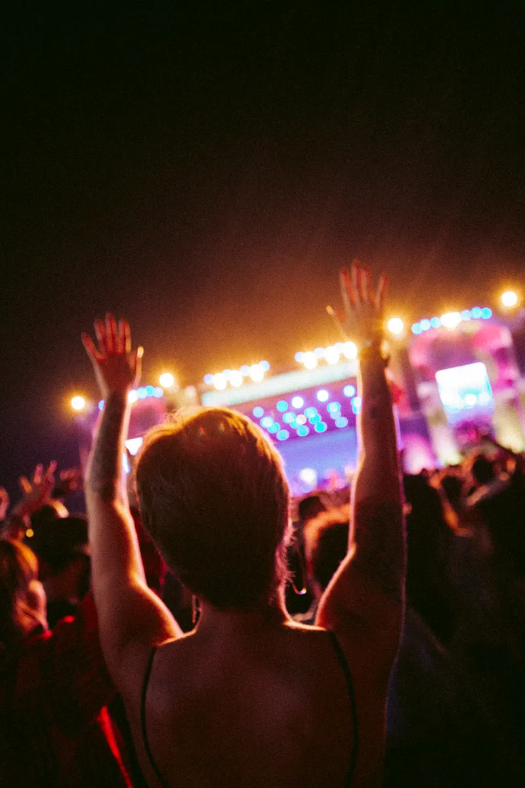

14 y 15 de noviembre · Urubamba, Cusco
Dos noches de música en el Valle Sagrado
Tres escenarios junto al río Vilcanota, 26 artistas y buses de regreso a Cusco cada hora hasta las 5:00.

Cartel
Sábado 14
- Kuntur Dub
- La Chola Tropical
- Sara Qhapaq Trío
- Marea Negra Sound System
- Pampa Rave
Domingo 15
- Los Hermanos Mayta
- Ñusta Beats
- Coro de Chinchero
- Qolla Noise
- Tuna Eléctrica de Calca
Escenarios
Vilcanota
El principal, frente al río. Abre a las 17:00 con el sol todavía sobre el nevado Chicón.
Maizal
Carpa de 800 personas para electrónica. Suena hasta las 4:30.
Patio
Acústico y coros, en el patio de una casa hacienda del siglo XVIII. Aforo de 250.
Cómo llegar
Desde Cusco, los buses del festival salen de la avenida Grau cada 30 minutos entre las 14:00 y las 20:00; el viaje dura 1 h 20 min y cuesta S/ 25 ida y vuelta. Urubamba está a 2 870 m: llega un día antes si vienes desde la costa y toma agua durante toda la tarde.
Entradas
Una noche
S/ 180
Sábado o domingo, escenarios Vilcanota y Maizal.
Dos noches
S/ 310
Las dos fechas y acceso al Patio por orden de llegada.
Dos noches con bus
S/ 350
Incluye los cuatro trayectos desde Cusco con asiento reservado.